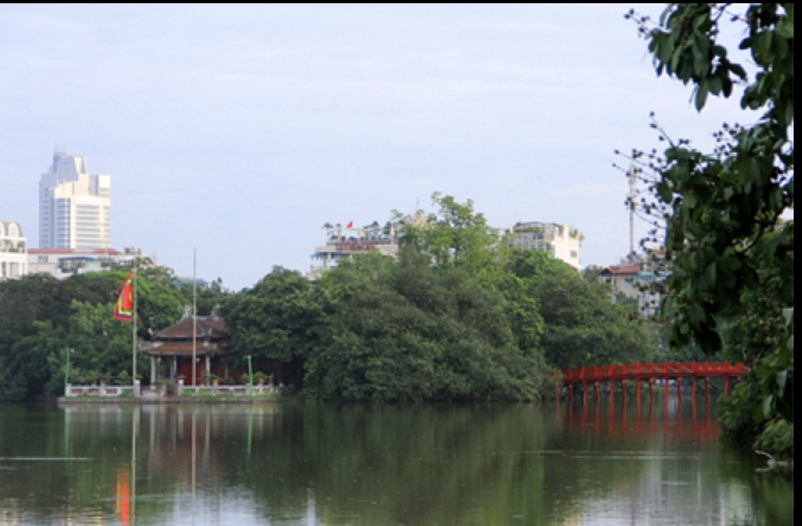
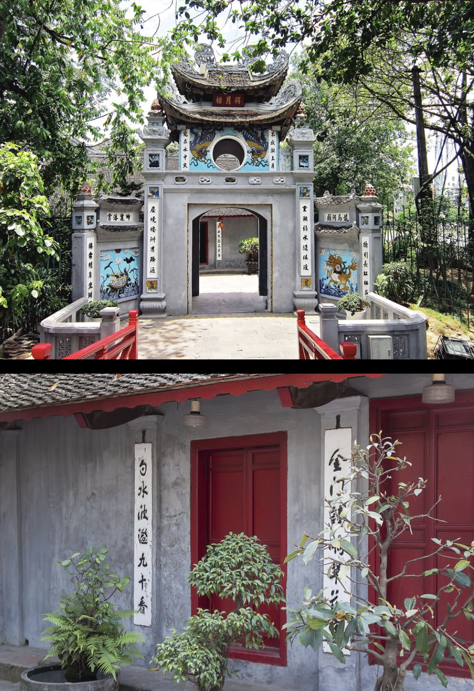
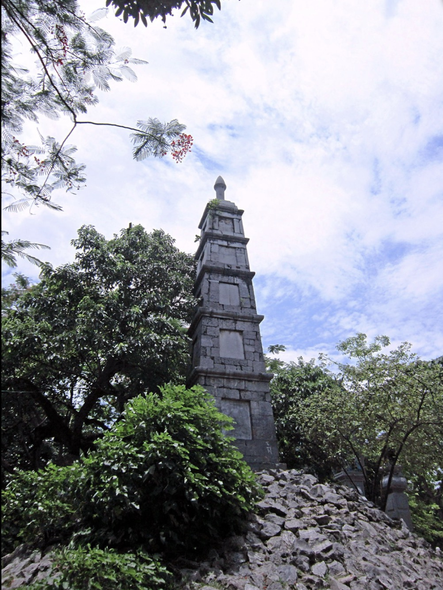
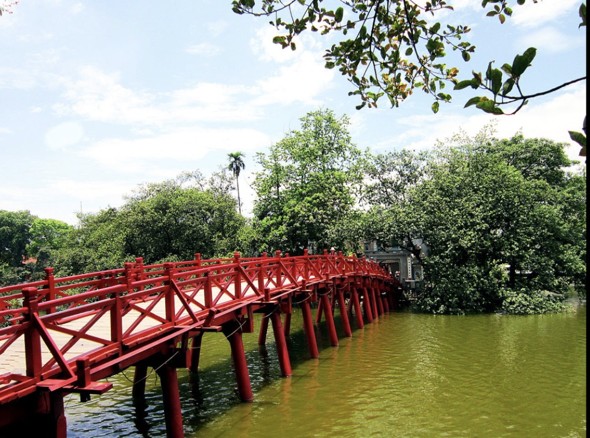

Di tích lịch sử và danh lam thắng cảnh hồ Hoàn Kiếm và đền Ngọc Sơn, Hà Nội, đã được Thủ tướng Chính phủ xếp hạng di tích quốc gia đặc biệt.

01
Hồ Hoàn Kiếm
Xa xưa, hồ này có tên là hồ Lục Thủy, hồ Tả Vọng, sau đó được đổi tên theo truyền thuyết vua Lê Thái Tổ trả gươm, nên gọi là hồ Hoàn Kiếm/hồ Gươm.
Trên gò đất nổi trong lòng hồ có một ngọn tháp, nơi rùa thường bò lên đẻ trứng nên được gọi là tháp Rùa (Quy Sơn tháp). Tháp xây bằng gạch, có mặt bằng hình chữ nhật, gồm 4 tầng, có 5 cửa dạng vòm. Tầng chóp có mái dạng phương đình 4 mái.
02
Đền Ngọc Sơn
Đền toạ lạc trên đảo Ngọc trong hồ Hoàn Kiếm, gồm các hạng mục:
Nghi môn: bằng gạch, được xây dựng vào thế kỷ XX, dạng trụ biểu, có hai mảng tường lửng nối trụ chính và hai trụ bên.
Tháp Bút: nằm sau nghi môn, được dựng trên ngọn núi đá cao 4m (núi Độc Tôn) để tưởng niệm công ơn của các chiến sĩ tử vong.


Nghi môn nội: nằm sau tháp Bút, với cửa chính được tạo bởi hai trụ lớn, đỉnh trụ đặt tượng nghê. Mặt trước của hai cửa giả đắp nổi đồ án Long môn, Hổ bảng.
Đài Nghiên: với cửa chính tạo kiểu vòm cuốn, hai tầng, chính giữa đặt đài Nghiên, được tạo từ một khối đá xanh hình trái đào. Đặc biệt, trên thân của nghiên có bài minh (64 chữ Hán) do Nguyễn Văn Siêu soạn.
Cầu Thê Húc: khởi thuỷ, cầu không có tay vịn, qua những lần trùng tu sau, đã làm cầu theo dạng cầu vồng, có lan can, sơn màu đỏ.
